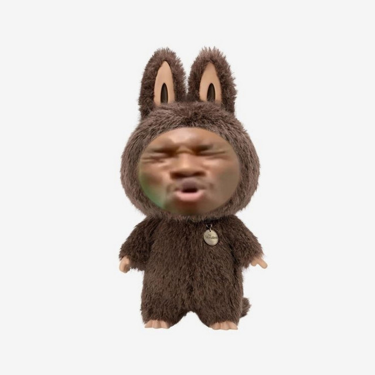

Entitas jahat ini, awal terwujud dari seorang pria yang terobsesi dengan "Boneka Labubu".Suatu hari pria tersebut berkunjung ke sebuah toko untuk membeli Labubu,akan tetapi karena saking ramainya peminat boneka ini,boneka yang tersedia habis sebelum pria tersebut dapat membelinya.Pria tersebut yang sudah antri 3 hari 3 malam menjadi mengamuk dan depresi yang membuatnya berubah menjadi spirit atau entitas jahat yakni"Boneka Ambalabu". Boneka yang terwujud dari energi jahat manusia yang terobsesi dengan boneka Labubu ini mencari mangsanya tepat pada pukul 10 malam.Konon katanya boneka ini suka mengunjungi rumah orang orang yang memiliki koleksi boneka Labubu,boneka Ambalabu ini akan mengetuk pintu mangsanya terlebih dahulu karena boneka ini dikenal juga memiliki sopan santun.Dan jika anda tidak membuka pintu untuknya, maka boneka ambalabu ini akan mengamuk dan mulai menggedor gedor pintu dan memaksakan diri untuk masuk.
